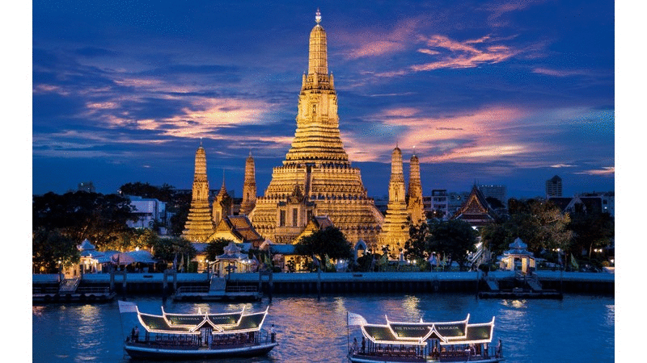
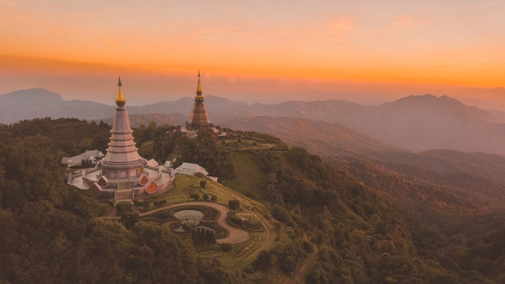
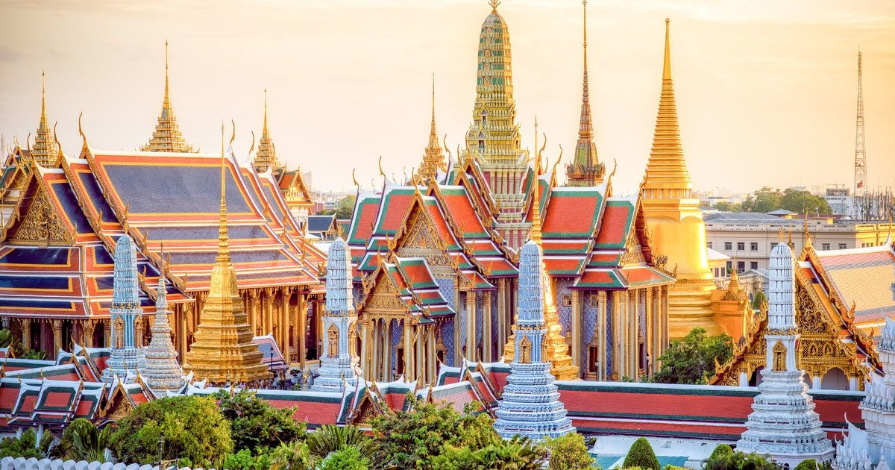
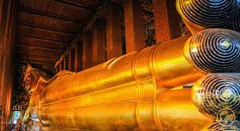
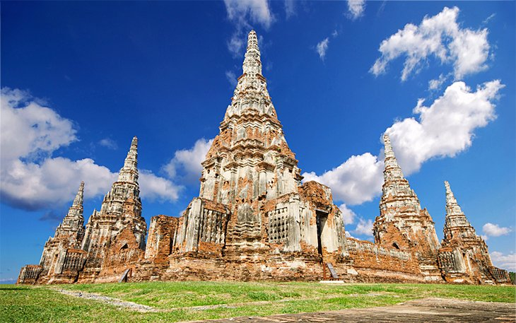
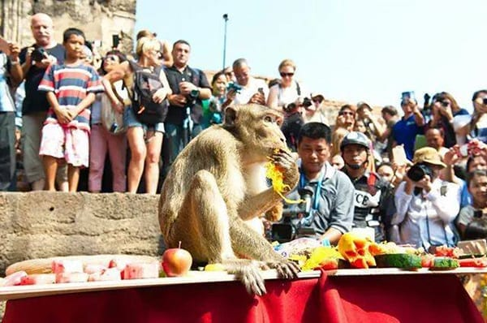
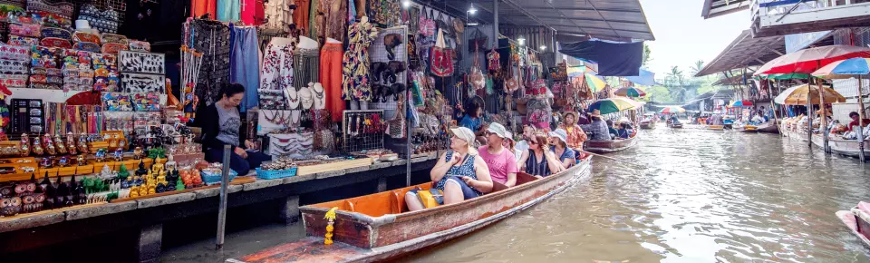
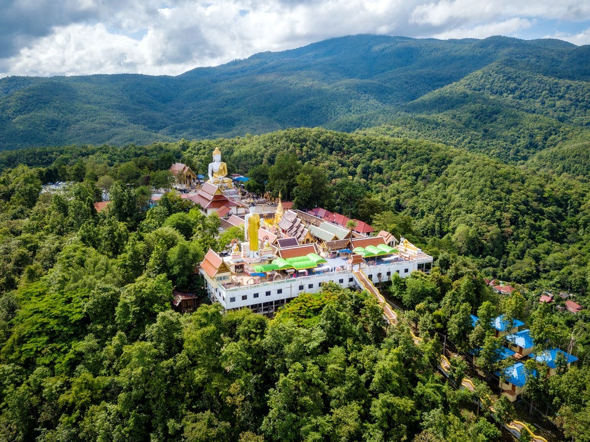
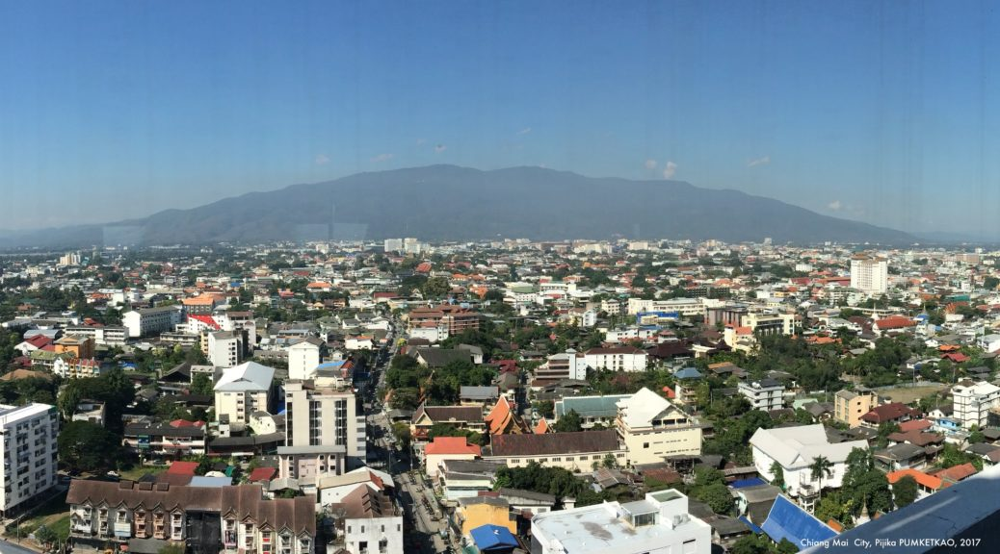
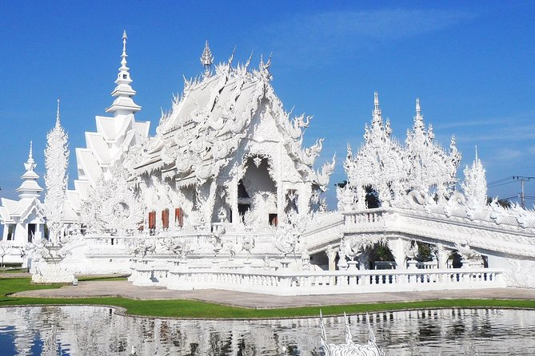

Should Visit Peaceful Thailand
Tips for Travelling in Thailand
Thailand, a land of islands, mountains, large stretches of forests and large cities, and full of little charming villages with countless surprises, awaits you. Explore a land where you’ll never get bored. Learn about its rich history and meet the local people.
Bangkok. A modern world metropolis, which you can start exploring from above by ascpending to the top of one of the many skyscrapers. You can get a free drink at the top of one of the tallest buildings, which belongs to the Baiyoke Sky Hotel, by taking advantage of this offer. Of course, the list of attractions in Bangkok doesn’t end here. You can continue exploring the city by visiting the Temple of the Emerald Buddha and the most famous royal palace in the city where you’ll discover Bangkok’s cultural and historical heritage. You’ll be accompanied by an English guide. The tour includes a visit to the Wat Pho temple with its famous Reclining Buddha, where you can feel the greatness of the mysterious being. If you’re looking for some fun, you can take a walk along the Khao San Road. And if you want to experience the hidden Bangkok you should go on a three-hour bicycle tour, which will take you through the largest Chinatown in the world and across Thailand’s main river, the Chao Phraya.


Wat Pho Pagoda
Reclining Buddha in Wat Pho
Bangkok is an excellent starting point for full-day trips from the city. You simply have to head down to the floating markets, which are a paradise for travellers. Travel like a local and visit Damnoen, the most famous floating market, by train. Once there, you can go shopping for tropical fruit in one of the colourful boats and observe Thai culture. Not far from Bangkok is Thailand’s old capital, Ayutthaya, where you can find a temple, which was declared a UNESCO World Heritage Site. All monkey lovers should visit the Lopburi Monkey Temple.


Thailand’s old capital, Ayutthaya
Lopburi Monkey Temple

floating markets,Damnoen
If you’re wondering what else you can see in Thailand, take the sleeper train and head to the northern part of the country. The sleeper train goes all the way north where it stops in Chiang Mai, the city between the mountains. Visit the Doi Suthep Temple overlooking the city. Take your time and observe the locals making offerings and praying. On your way back to the city you’ll encounter many opportunities to explore the unknown and maybe book a trip for the next day. Or, you can book now for more relaxed travelling. You can choose among visiting the nearby river rapids, exploring the neighbouring villages or spending a day with rescued elephants by taking care of them and learning a great deal. Don’t miss the chance to visit the magnificent tropical forests and spectacular waterfalls. If you want to sleep in a traditional Thai house with a typical Thai garden, but want to feel the travel spirit, then we recommend staying at HI Chiang Mai, located in a quiet neighbourhood close to the Night Bazaar. Go further north on a trip to the second Chiang, that is Chiang Rai. Once there, don’t miss the opportunity to discover the Golden Triangle and the White Temple with this offer, which includes delicious Thai food. You can visit ancient ethnic groups that have been preserving their traditions for centuries. Lake Phayao is perfect if you want to meditate for a bit and wish for world peace.

Doi Suthep Pagoda

